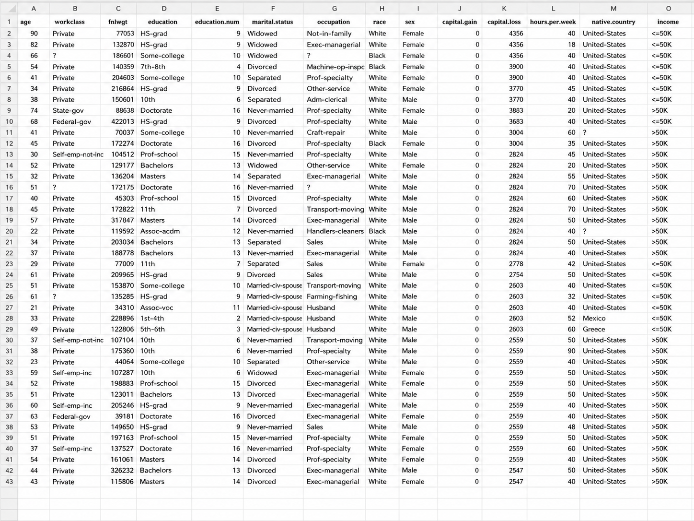
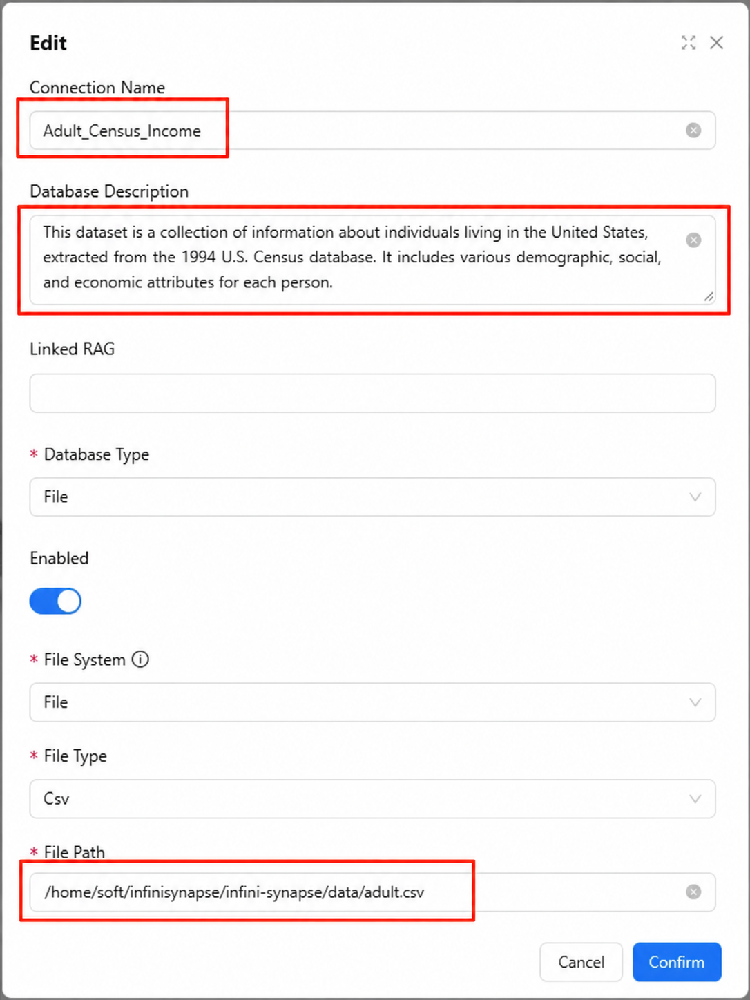
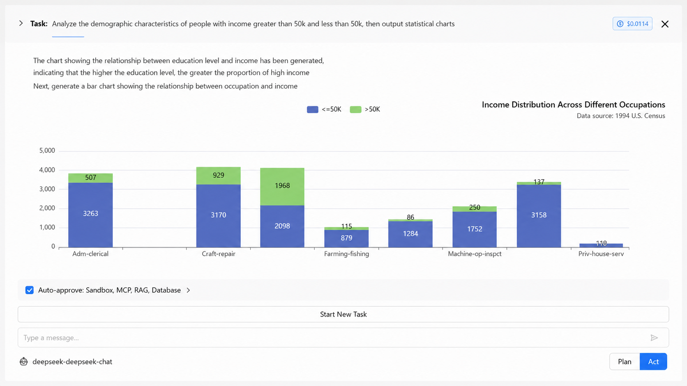

The Data Analysis ToolPak is a built-in Microsoft Excel add-in that adds 19 statistical and engineering analysis tools to Excel — regression, descriptive statistics, t-tests, ANOVA, correlation, histogram, Fourier analysis, and more. It ships with every copy of Excel (2016, 2019, 2021, 2024, and Microsoft 365) at no extra cost, but it is not enabled by default. That's why so many people search for how to add data analysis in Excel: the feature is there, it's just hidden behind three menus.
The same flow works on Windows (Excel 2016 through Microsoft 365). On Mac, the path is slightly different: Tools → Excel Add-ins → tick Analysis ToolPak → OK. Once enabled, the setting persists; you do not need to re-enable it every time you open Excel.

Detailed instructions for the most common setup (Windows, Excel 2019 / 2021 / 2024 / Microsoft 365):
The File tab is at the top-left of the ribbon. Clicking it opens the backstage view with options for opening, saving, and configuring the application.
Options appears near the bottom of the left sidebar. In the Options dialog, choose Add-ins from the left menu. You'll see a list of active and inactive add-ins.
At the very bottom of the Add-ins panel there's a Manage dropdown. Set it to "Excel Add-ins" and click the Go button next to it.
In the small Add-Ins dialog that appears, find Analysis ToolPak in the list, tick the checkbox, and click OK. If Excel prompts you to install it, click Yes.
Switch to the Data tab on the ribbon. On the far right, in the Analysis group, you should now see a Data Analysis command. If it's there, you're set.
Descriptive Statistics is the gentlest place to start. It computes mean, median, standard deviation, range, min, max, count, and several other summary metrics for any column of numbers in one click.
On the Data tab, click Data Analysis. A dialog appears listing all 19 tools.
Scroll the list or type the first letter to jump to it. Click OK to open the configuration dialog.
Click into the Input Range field and select the column of data (including the header row). Tick "Labels in first row" if you included headers. Choose an Output Range cell — Excel will write the result there. Tick "Summary statistics" so you get the full table.
Excel writes a two-column table with the metric name and value: Mean, Standard Error, Median, Mode, Standard Deviation, Sample Variance, Kurtosis, Skewness, Range, Minimum, Maximum, Sum, Count. Use these as a sanity check on your data before any deeper analysis.
Regression answers a different kind of question: how much does one variable depend on another? In the sample dataset, the question would be "how much do sales increase per dollar of ad spend?". Same dialog flow, more interesting output.
Click Regression and OK. The Regression dialog has more fields than Descriptive Statistics — most of them have sensible defaults.
Input Y Range is your dependent variable (the thing you want to predict — Sales). Input X Range is your independent variable (the predictor — Ad Spend). For multiple predictors, include all of them as contiguous columns in the X range. Tick Labels if your selections include header rows.
Excel writes a multi-section report: Regression Statistics (including R Square), ANOVA, Coefficients with p-values, and a residuals table if you tick Residuals. Read R Square first — it tells you what share of variation in Y is explained by X.
Almost always means the ToolPak isn't enabled. Repeat Step 1 above. If you've already enabled it and still don't see the command, quit Excel completely (not just close the window) and reopen.
Click Yes when prompted; Excel will install it from the original Office installer. If you're on a managed corporate machine and don't have install rights, your IT team needs to add the optional Office feature.
The Input Range includes a header text or empty cells. Either tick "Labels in first row" and reselect, or trim the range to numeric values only.
Check three things: (1) ranges include the right columns, (2) Labels checkbox matches whether headers are included, (3) your data has no hidden formatting that makes "2.5" actually be text. Re-running with cleaned numeric data usually resolves it.
The Analysis ToolPak is genuinely useful for small ad-hoc analyses on a single worksheet. But for anyone using a data analysis tool in Excel at work, there are four points at which most teams hit a wall:
These aren't bugs; they're design choices that fit Excel's role as a spreadsheet. They just mean ToolPak hits a ceiling sooner than you might expect.
When the ToolPak hits its ceiling, the right move isn't to write Python scripts or buy a heavyweight BI platform — it's to use a tool that accepts Excel as one input among many and runs analyses through natural language. InfiniSynapse is built for exactly this transition: you can upload Excel and CSV files directly, or connect to a live database, and ask analytical questions in plain English without dropping the spreadsheet workflow you already know.

Once the data is in, the difference becomes obvious: you stop opening dialog boxes and start asking questions. The agent generates the SQL, runs the analysis, and explains the result alongside the numbers.

Side-by-side, this shows where a data analysis tool in Excel stops being enough and what an AI-powered alternative adds:
| Capability | Excel Data Analysis ToolPak | InfiniSynapse |
|---|---|---|
| Reads Excel / CSV files | Yes | Yes |
| Connects to databases | No | PostgreSQL, MySQL, Snowflake, Oracle, MongoDB, and more |
| Practical row limit | ~100K rows before slowdown | Tens of millions of rows |
| Cross-source federation | No | Joins Excel + database + file in one query |
| Natural language input | No (dialog boxes) | Yes |
| Reproducible | Manual re-run | Saved as a session, re-runnable |
| Best fit | One-off analyses on small datasets | Ongoing analyses across sources at scale |
Honest framing: if your work is a few descriptive analyses a month on small spreadsheets, the built-in ToolPak is perfectly adequate and free. If you find yourself exporting CSVs from multiple places to bring them into one Excel sheet, or waiting on slow regressions, that's the signal to graduate.
Last updated: 2026-05-09
Methodology: Tutorial steps verified against Microsoft's official documentation for Excel 2019 through Microsoft 365 (as of 2026-05). Screenshots and command paths reflect the Windows desktop version; the Mac flow differs and is noted inline.
Conflict of interest: InfiniSynapse is the publisher of this guide. The "alternative" section reflects our product's positioning; the Excel ToolPak instructions are based on Microsoft's public documentation and are independent of any product promotion.
Update cadence: Reviewed quarterly. Microsoft UI changes and version references refreshed every 90 days.